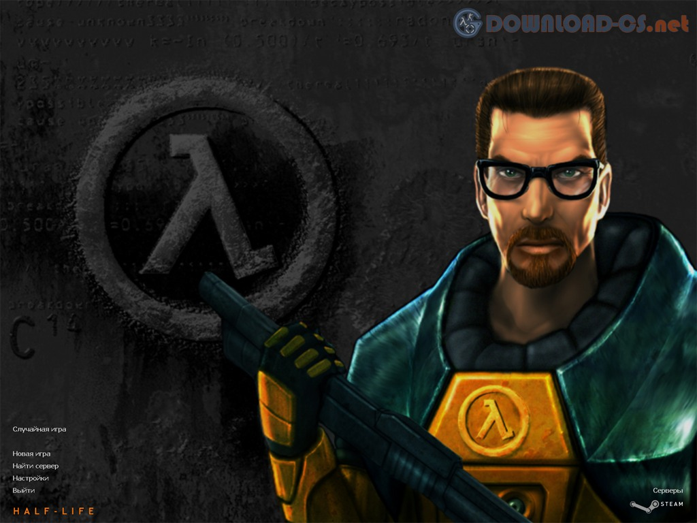
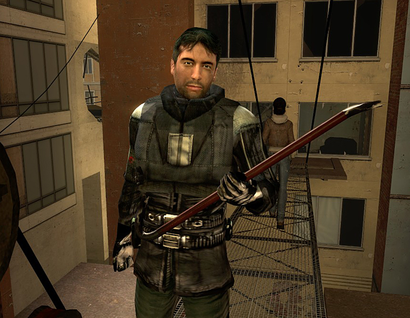
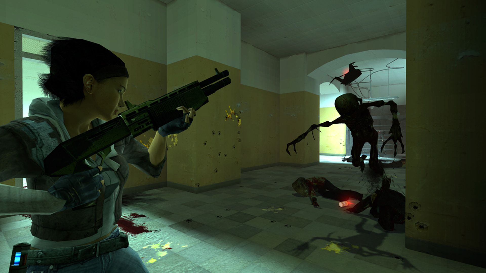
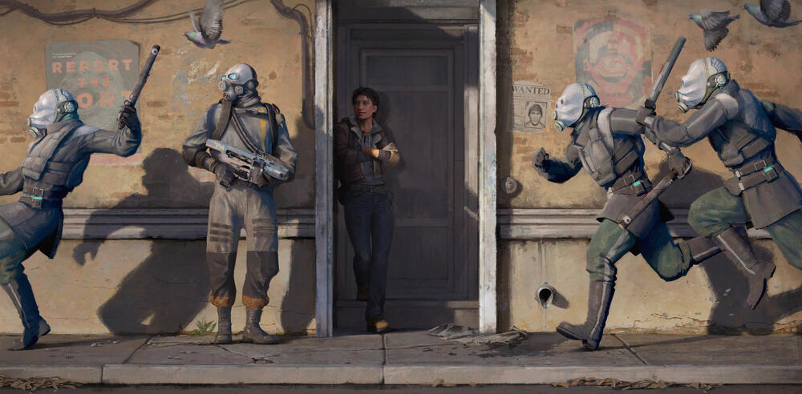

Half-Life — серия компьютерных игр в жанре научно-фантастического шутера от первого лица. Основные игры серии разработаны компанией Valve, а три спин-оффа были созданы сторонней компанией Gearbox Software. Изначально игры серии издавались Sierra Studios, а впоследствии в качестве издателей выступали как компания Electronic Arts, так и сама Valve. Основой сюжета большинства игр серии являются приключения физика-теоретика Гордона Фримена, который в результате инцидента в научном комплексе «Чёрная Меза» становится единственным, кто может спасти Землю от порабощения инопланетянами.
Серия игр

Игровой мир. Главные герои
- Half-Life 1
- Гордон Фримен
- Адриан Шепард
- Барни Калхаун
- Джина Кросс и Колетт Грин
- Челл
- Аликс Вэнс
- Half-Life 2
- Гордон Фримен
- Барни Калхаун
- Аликс Вэнс
- Илай Вэнс
- Вортигонты (:
- Half-Life: Alyx
- G-Man
- Аликс Вэнс
- Рассел
- Вортигонты
- Джефф
Half-Life
Компьютерная игра в жанре научно-фантастического шутера от первого лица, разработанная американской компанией Valve Software и изданная компанией Sierra Studios 19 ноября 1998 года для персональных компьютеров. Первая игра в серии Half-Life. Технически основана на значительно переработанном движке Quake от id Software. В 2001 году студия Gearbox Software портировала Half-Life на консоль PlayStation 2. Также игра разрабатывалась для платформы Sega Dreamcast, но релиз был отменён. В январе 2013 года Valve портировала игру на Linux и OS X. Игра Black Mesa (2020), разработанная студией Crowbar Collective, представляет собой доработанный и расширенный ремейк Half-Life.
Half-Life стала одной из первых игр, в которых сюжет развивается полностью внутри игрового пространства без использования видеозаставокПерейти к разделу «#Игровой процесс». Игровые издания высоко оценили новаторский стиль повествования, являющийся главным достоинством игры. Другой сильной стороной игры называют искусственный интеллект противников. Half-Life является одной из первых игр, где у игрока появились союзники. Многие издания отмечают, что данная игра произвела революцию в жанре шутера от первого лица и положила начало новому этапу его развития.
Сюжет
История игры рассказывается без помощи видеовставок, разрывов во времени и подобных им приёмов. Развитие сюжета происходит при помощи скриптовых сцен, функционирующих непосредственно внутри игрового действия. Игровой процесс и подача сюжета при таком подходе образуют единое целое. Игра не разделена на уровни или миссии; деление игрового мира на карты вызвано техническими ограничениями. За всеми событиями игрок наблюдает глазами главного героя — Гордона Фримена.
Выслушивая очередной монолог или же наблюдая за важным сюжетным событием, игрок не утрачивает контроль над главным героем, за исключением нескольких скриптовых сцен. В то же время самого персонажа нельзя увидеть со стороны или услышать его голос. Все эти приёмы способствуют погружению игрока в игровую реальность, создавая эффект присутствия. Большое влияние на сюжетную линию и угнетающую атмосферу Half-Life оказал сериал «За гранью возможного», особенно серия «Пограничная полоса», а концепция игры родилась под впечатлением от повести Стивена Кинга «Туман» и сериала «Секретные материалы».
Действие игры происходит в гигантском сверхсекретном научно-исследовательском комплексе «Чёрная Меза», который находится в недрах горы, расположенной в американском штате Нью-Мексико. Действующий персонаж игры — молодой талантливый научный сотрудник, доктор философии (PhD) в области теоретической физики, Гордон Фримен, работающий в Лаборатории аномальных материалов, которая находится в Чёрной Мезе.
Игровой процесс
Являясь шутером от первого лица, игра представляет игровой мир глазами главного героя. Игровой процесс не разделён на миссии или этапы, поэтому действие заключается в непрерывном передвижении по целостным локациям, лишь технически разделённым на карты (хотя в середине игры протагониста оглушают солдаты HECU, и он приходит в себя уже в другой локации). Все карты линейны и, как правило, предполагают единственный возможный путь для прохождения. Связанные сюжетом и месторасположением карты объединены в поименованные главы.
Большую часть времени, как и в любом другом шутере, игроку предстоит отстреливаться от врагов. Степень жизнеспособности игрока определяется показателем здоровья и уровнем зарядки защитного костюма. Оба показателя можно восполнить несколькими способами, например, подбирая разбросанные по карте батареи и аптечки или пользуясь стационарными зарядными станциями. В любое время игроку доступны загрузки и сохранения.
Характерной особенностью геймплея Half-Life является постоянное взаимодействие игрока с окружающей средой. Например, игрок может пододвинуть ящик, чтобы забраться на нужную высоту, или набросать в воду лёгких бочек, чтобы перебраться на противоположный берег. На основе интерактивности окружения построено множество головоломок, которые могут потребовать от игрока сообразительности.
Другое проявление интерактивности окружения — возможность использования стационарного оружия, такого как орудие танка или пулемёт. Ещё один пример использования нестандартного оружия — вызов авиаудара по противнику при помощи задания цели на электронной карте. В качестве транспортного средства выступает вагонетка, поездке на которой посвящена целая глава.
Особым элементом геймплея являются так называемые джамп-пазлы. Игроку приходилось прыгать по платформам, корректируя в полёте дальность и направление прыжка. Джамп-пазлы достигли своего апогея в главе «Зен», где игрок прыгает на огромные расстояния по летающим островкам мира чужих при уменьшенной гравитации с «модулем длинных прыжков» на костюме.
Оценки игроков и критиков
Half-Life была принята игроками позитивно, получила множество положительных отзывов и наград. По состоянию на 16 ноября 2004 года было продано восемь миллионов копий игры, а к 2008 году было продано уже 9,3 миллиона копий. По данным Steam Spy на декабрь 2017 года, в сервисе цифровой дистрибуции Steam игру приобрели примерно 6,8 миллионов игроков.
Half-Life получила хорошие оценки от большинства критиков, что подтверждает совокупный балл 96 из 100 на агрегаторе отзывов Metacritic. Джефф Грин в Computer Gaming World писал, что игра «не просто одна из лучших игр года. Это одна из лучших игр за все годы, классика, в тысячу раз лучшая любого непосредственного конкурента, а также — говоря об одиночном режиме — лучший шутер со времён Doom».
Многие критики особенно отметили проработку игрового искусственного интеллекта противников. В IGN похвалили в первую очередь слаженные действия солдат HECU: «просто удивительно, как хорошо может быть реализован искусственный интеллект, и он, вероятно, стоит того, чтобы играть в Half-Life лишь ради сражений с пехотинцами». В обзоре журнала Edge отмечено, что противники иногда совершают самые неожиданные выходки, а инопланетные монстры и чёрные оперативники «наделены лучшим ИИ, который когда-либо был в PC-играх». В рецензии Game Revolution также пишется, что враги не позволяют спокойно уничтожать себя из безопасного места, как в Quake, они пытаются обходить с флангов и заставляют игрока покидать укрытия.
Кроме многочисленных похвал некоторые стороны игры получили негативные отзывы отдельных критиков. В первую очередь это относится к заключительной части игры c отправкой игрока в Зен; например, в рецензии на Just RPG пишется, что это похоже просто на попытку затянуть игру ещё примерно на час и излишне отдаляет сюжет от реальности. Нелюбовь некоторых игроков и критиков к Зену можно объяснить тем, что резкая смена обстановки лишает игрока части предыдущего опыта решения головоломок, заставляет под конец игры изучать новые приёмы (например, длинные прыжки с использованием специального модуля).
Half-Life 2
Сюжет
Действие игры происходит примерно через 20 лет после событий первой части (по подсчётам фанатов). G-man пробуждает Гордона Фримена из стазиса и перемещает в поезд, идущий в Сити 17, город в Восточной Европе. Сразу же становится понятно, что Земля захвачена инопланетной цивилизацией, именуемой Альянсом. На вокзале Барни, охранник из Чёрной Мезы и друг Гордона, спасает его от участи быть пойманным Гражданской Обороной.
Он направляет его в лабораторию Кляйнера. ГО устроило облаву на Гордона и почти поймало, но его выручила Аликс и отвела в лабораторию, где Гордону выдали костюм. Далее Аликс телепортируют в Восточную Чёрную Мезу — подпольную базу Сопротивления. Гордона тоже собираются телепортировать, но всё срывает Ламарр, ручной хедкраб доктора Кляйнера. Гордон телепортировался на задний двор, Барни кидает ему монтировку, и Гордон начинает своё путешествие через каналы. В результате он попадает в Восточную Чёрную Мезу, где встречается с Аликс, её отцом Илаем и доктором Моссман.
Гордону дают грави-пушку и знакомят с Псом, ручным роботом Аликс. Неожиданно идиллию обрывает нападение сил Альянса. Гордон выбирается из лаборатории и попадает в Рейвенхольм, шахтёрский городок, переполненный зомби. В нём есть лишь единственный выживший — сумасшедший священник Григорий. Он помогает Гордону выбраться из города, а сам остаётся. Гордон попадает на базу Сопротивления; выясняется, что Илая захватили в плен и держат в Нова Проспект, отряд сопротивления выдают ему машину, при помощи которой Гордон добирается до маяка. Затем он доходит до ещё одного лагеря Сопротивления, где побеждает мирмидонта и получает фероподы, при помощи которых можно контролировать солдат муравьиных львов.
Гордон, не без помощи муравьиных львов, штурмует Нова Проспект и находит Аликс. Выясняется, что Моссман — предательница. Аликс и Гордон находят Илая, но Моссман обманывает их и телепортируется с Илаем. Вслед за ними телепортируются Гордон и Аликс, но ворвавшиеся в зал солдаты Альянса уничтожают телепорт во время телепортации. В результате, герои попадают в лабораторию Кляйнера через неделю после телепортации, но для них это время показалась одной секундой. За прошедшую неделю в Сити 17 началось восстание. В ходе боёв Аликс попадает в плен. Гордон находит Барни, и они вместе штурмуют Нексус Патруля и отключают инопланетную установку на крыше. Они пробиваются к Цитадели, где с помощью Пса Гордон попадает внутрь.
Гордон попадает в поле конфискации, где уничтожается всё его оружие, однако, происходит сбой и грави-пушка заряжается. Заряженная грави-пушка излучает синее свечение и взаимодействует с живыми объектами. В ходе путешествия по Цитадели Гордон попадает в плен. Брин собирается телепортировать Илая и Аликс в мир Альянса, но вдруг вмешивается Моссман, которая освобождает всех. Брин бежит и собирается телепортироваться в измерение Альянса, но Гордон уничтожает телепорт. Происходит взрыв, время останавливается, и появляется G-man. Он поздравляет Гордона с выполненной работой и снова отправляет в стазис.
Игровой процесс
Игровой процесс Half-Life 2 похож на таковой у предшественника. Игрок перемещается по множеству линейных уровней, борясь с трансчеловеческими войсками, известными как Альянс, а также с враждебными инопланетными существами. Загадки и использование транспортных средств чередуются на протяжении всей игры, разбивая участки карт на боевые и разведывательные.
Так как Half-Life 2 является шутером от первого лица, игровой мир всегда подаётся с точки зрения Гордона Фримена, так что игрок невольно ставит себя на место Гордона. В нижней части экрана отображается здоровье Гордона и доступное количество боеприпасов, в то время как сверху отображается список всего носимого оружия. Здоровье и заряд костюма можно пополнять, поднимая аптечки и аккумуляторы или же пользуясь стационарными установками.
Костюм HEV является одним из основных элементов и Half-Life, однако во втором Half-Life 2 он имеет несколько другой вид, будучи улучшенным с версии IV в оригинальном Half-Life до версии V. Костюм вмещает в себя до 100 единиц энергии, которая истощается от повреждений костюма — стрельбы, радиоактивной воды и т. п. Заряжается или от стационарных зарядных устройств, или от батареек, разбросанных по всей игре.
Игрок побеждает врагов, используя ассортимент оружия от монтировки до РПГ. Арсенал игры состоит в основном из современного оружия вроде пистолета или автомата, однако игроку придётся также использовать арбалет, феромоны муравьиных львов, а также импульсную винтовку Патруля Альянса. Возможности физики движка Source полностью раскрываются при помощи гравитационной пушки. С помощью этого устройства игрок может поднимать небольшие предметы и отбрасывать их с большой силой, а также отталкивать боле тяжёлые предметы, освобождая себе путь и борясь с врагами. Грави-пушкой можно выполнять и небоевые задачи, такие как сбивание замков или возвращение на колёса перевернувшегося автомобиля.
Многие головоломки используют физический движок игры. Примером может служить складывание коробок в кучу, чтобы подняться к лазу в стене. Часто головоломки решаются при помощи грави-пушки. Например, требуется столкнуть разбитые машины с шоссе, чтобы расчистить себе дорогу.
Оценки игроков и критиков
Half-Life 2 получила большое количество позитивных обзоров. По данным на 2008 год игра была продана в количестве более 6.5 миллионов, не учитывая продажи через сервис Steam. Игра стала одной из самых успешных и получила 96 % из 100 возможных на GameRankings и Metacritic. Такие источники, как GameSpy, The Cincinnati Enquirer, и The New York Times поставили игре высшие оценки, а такие, как PC Gamer и IGN одни из самых высоких. Maximum PC поставила Half-Life 2 невероятные 11 баллов из 10 возможных и назвала игру «самой лучшей в истории». Также в 2012 году на Spike VGA 10 Half-Life 2 получила награду «Entertainment Weekly and Spike VGA Best Game of the Decade» (лучшая игра десятилетия).
Half-Life:Alyx
Компьютерная игра в жанре шутера от первого лица для устройств виртуальной реальности, разработанная и изданная американской компанией Valve. Игра построена на игровом движке Source 2, а её выход состоялся 23 марта 2020 года на ПК под управлением операционной системы Windows с поддержкой большинства ПК-совместимых шлемов виртуальной реальности. Это первая игра в серии Half-Life после более чем 12-летнего перерыва с момента выхода Half-Life 2: Episode Two в 2007 году. История игры рассказывает об Аликс Вэнс, которая впервые в серии появляется в роли протагониста, о её отце Илае Вэнсе и об их борьбе против оккупации Земли инопланетной цивилизацией «Альянс».
Сюжет
Воспоминания о поражении в Семичасовой войне ещё свежи. В тени Цитадели — крепости Альянса — жители Сити-17 учатся жить под властью захватчиков. Среди немногих оставшихся в живых жителей два самых изобретательных учёных Земли: доктор Илай Вэнс и его дочь Аликс — основатели зарождающегося сопротивления
Вы — Аликс Вэнс, и вам предстоит поднять восстание
Вы и ваш отец были переселены в Сити-17. Спустя годы, вы продолжаете подпольную научную деятельность — проводите важнейшие исследования и создаёте важные инструменты для тех немногих, кто осмелился бросить вызов Альянсу. Каждый день вы узнаёте о враге что-то новое и каждый день ищете его уязвимости.
Оценки игроков и критиков
Half-Life: Alyx получила всеобщее признание критиков, оценка на агрегаторе рецензий Metacritic — 93/100 на основании 62 обзоров. VR Awards назвали Half-Life: Alyx лучшей VR игрой года.
Дополнения
Образованная в 1996 году, Valve Software принялась за разработку дебютного проекта, которым стал 3D-шутер Quiver (с англ. — «Дрожь») на лицензированном у id Software движке Quake. За время создания игра пережила кардинальное переписывание сценария и сменила название на Half-Life.
Далее последовали три дополнения к игре, созданные компанией Gearbox Software: Half-Life: Opposing Force, Half-Life: Blue Shift и Half-Life: Decay. Эти дополнения рассказывают об инциденте в «Чёрной Мезе» от лица других персонажей — Адриана Шепарда, Барни Калхауна, Джины Кросс и Колетт Грин.
Историю, начатую в Half-Life 2, разработчики планировали завершить в Half-Life 2: Aftermath (с англ. — «Последствия»), но позже они решили перейти на эпизодический формат, объяснив это тем, что хотят «дать фанатам возможность узнать о произошедшем после взрыва в Цитадели через 18 месяцев, а не заставлять их ждать ещё шесть лет». Следуя этой схеме, в 2006 году вышел Half-Life 2: Episode One, в 2007 — Half-Life 2: Episode Two, а в IV квартале того же года должен был состояться релиз Half-Life 2: Episode Three, однако по неизвестным причинам игра до сих пор не вышла. Кроме того, планировался Half-Life 2: Episode Four (рабочее название — Return to Ravenholm, с англ. — «Возвращение в Рейвенхолм») от французской студии Arkane Studios, действие которого разворачивалось бы в заброшенном шахтёрском городке Рейвенхолм (англ. Ravenholm) — игра разрабатывалась в период с 2006 до конца 2008 года совместно и под руководством Valve, но проект был приостановлен.
На время существования серии в процессе разработки находились несколько игр, которые были отменены. Half-Life: Hostile Takeover от 2015, Inc. — отменённое дополнение к оригинальной игре, должно было стать вторым по счёту после Opposing Force; разрабатывалось в 1999—2000 годах. Half-Life 2: Episode Three, анонсированная в 2006 году, должна была стать завершающим эпизодом приключений Аликс и Гордона; предполагалось, что события должны были происходить на ледоколе «Борей» и в пограничном мире Зен
В 2007 году вышла игра Portal, выполненная в виде головоломки от первого лица. Несмотря на то, что в плане геймплея игра отличается от Half-Life, она дополняет и расширяет её вселенную. Через четыре года, 19 апреля 2011 года, вышло продолжение — Portal 2.